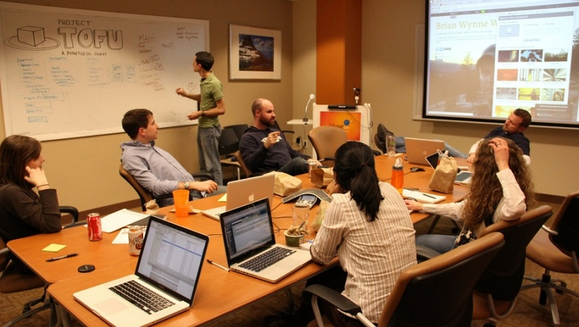

AI
AI Interview Practice
Answer role-specific questions and receive structured feedback.
Practise now →Rehearse role-specific interviews, sharpen your resume, solve coding problems and track your progress in one calm, focused workspace.
Question 3 of 8
Features
Answer role-specific questions and receive structured feedback.
Practise now →Timed sessions by category, role and difficulty with a score report.
Start a mock →Compare your resume to a job description and close keyword gaps.
Analyse resume →Curated problems with an editor, test runs and results.
Solve problems →Communication, technical and confidence scores with next steps.
View feedback →History, skill breakdown and improvement over time.
Track progress →AI interview showcase
Try the sample below. Scoring is generated by mock logic so you can preview the experience.
How it works
Choose your role, level and interview type.
Answer questions and solve problems.
See scores, strengths and improvements.
Track progress and repeat with focus.
Practise together
Run a mock round with friends, mentors or colleagues, then review the feedback together.

Mock analysis
Found: JavaScriptGitREST APIs
Missing: TypeScriptCI/CD
Resume / ATS
Upload a resume, paste a job description and see keyword gaps with practical improvements.
function twoSum(nums, target) {
const seen = new Map();
for (let i = 0; i < nums.length; i++) {
if (seen.has(target - nums[i])) return [seen.get(target - nums[i]), i];
seen.set(nums[i], i);
}
}Coding practice
Filter problems by difficulty, pick a language and see mock test results. No real compiler is connected.
Performance
Track overall score, skill breakdown and recent interviews as you improve.
Free to try in your browser. No account needed for the demo.